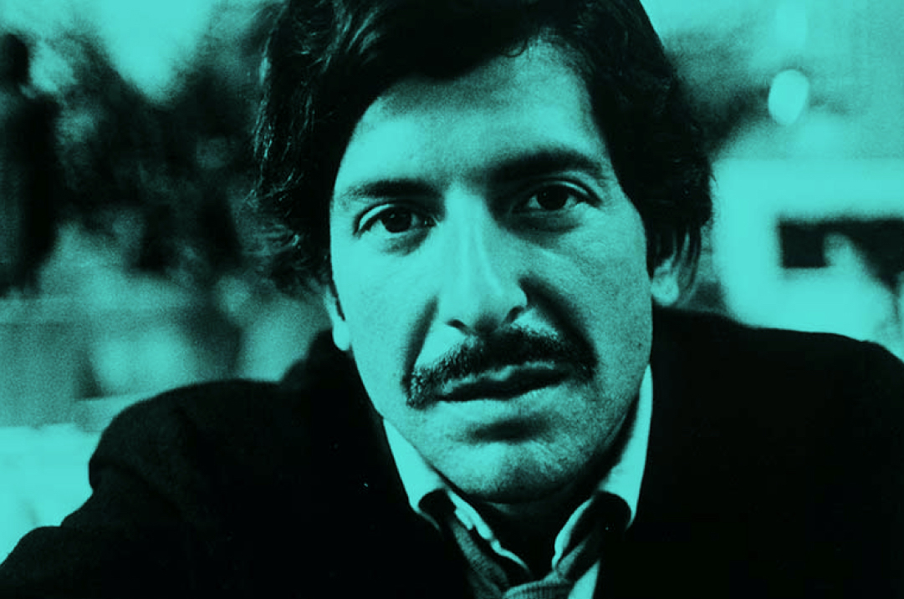
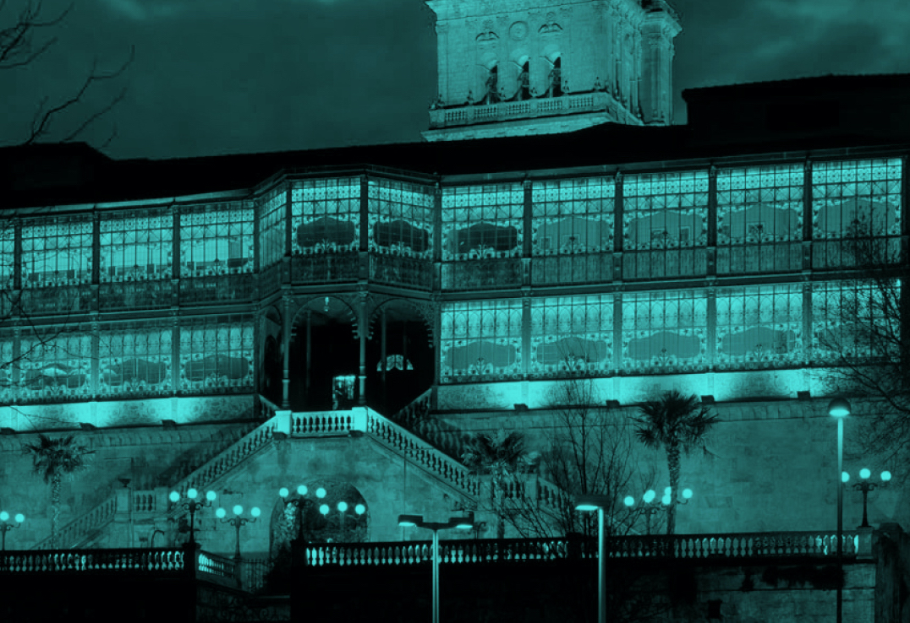
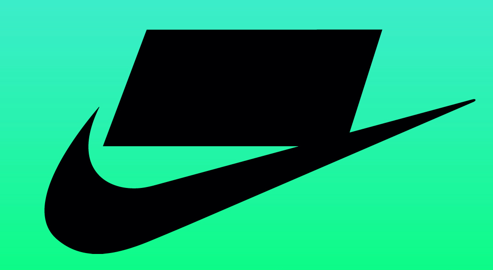
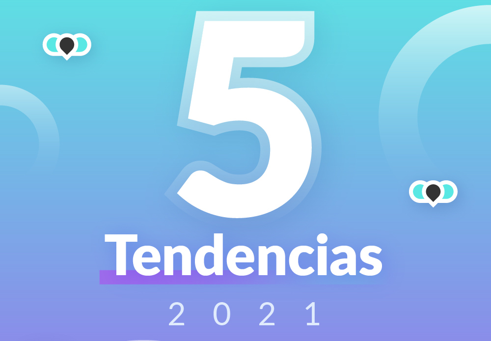
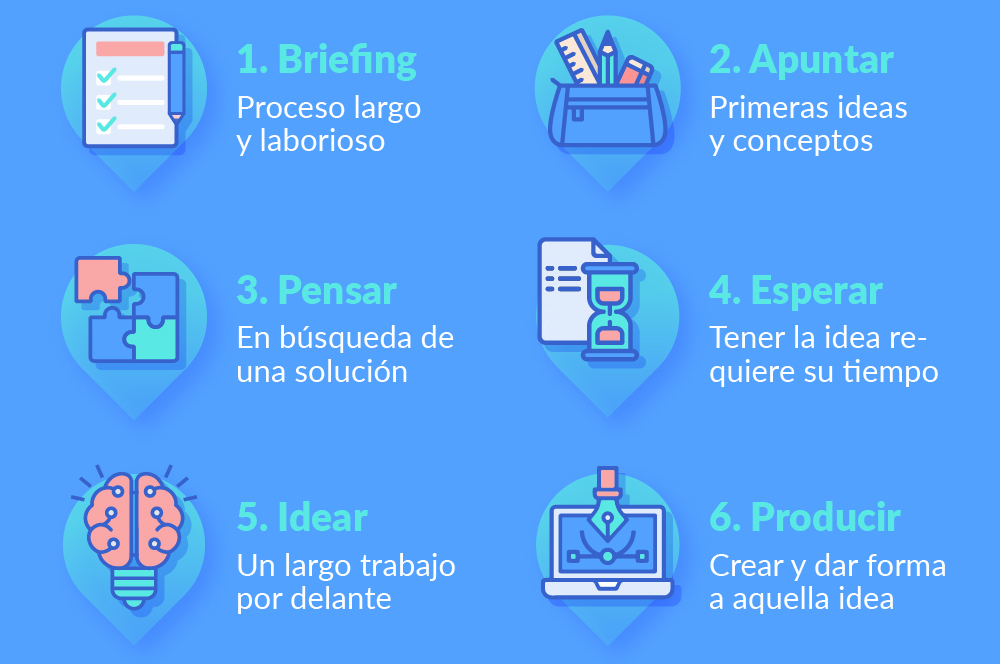

Cato se mudo a Chicago, donde estudio brevemente con el diseñador de la Bauhaus László Moholy-Nagy.Fue un diseñador gráfico, el cual trabajo en portadas de discos.

Antes de acusar a una marca de plagio
En la actualidad los recursos gráficos de los que disponemos son finitos y limitados. Esto hace que las probabilidades de que una marca coincidan son mayores.
Museo de Salamanca Art Nouveau y Déco
La Casa Lis es un palacete urbano enclavado sobre la antigua muralla de la ciudad de Salamanca, fue mandado a construir por D. Miguel de Lis en 1855 - 1909.

¿Te gustan los juegos, el Art Nouveau y el Déco?
Transistor, es un juego de rol con temática de ciencia ficción inspirado en el Art Nouveau y Déco. Bruxelles 1893, es un juego de mesa orientado en la época del nacimiento del Art Nouveau.
¿Sabías que Nike no podía usar su nombre en España?
Un grupo de empresarios españoles (Cidesport y J. Rosell) formuló una demanda solicitando la nulidad de la marca Nike que el Registro de Marcas había otorgado a las sociedades American Nike y Nike Internacional.

5 Tendencias de 2021
Las personas y las empresas han tenido que adaptarse más rápido que nunca en esta nueva era tecnológica por la que estamos pasando. Hay ciertos elementos del diseño que llegaron para quedarse, así que veamos algunas predicciones.

Proceso creativo
El estudio del proceso creativo es uno de los elementos importantes de la naturaleza variada de la creatividad. Según Edward De Bono, una de las características más comunes y fundamentales de los procesos creativos corresponde a la aproximación como sistema cognitivo dinámico y auto-organizado.

¿Existen las 3B en diseño?
Es habitual que cuando alguien necesita los servicios de un diseñador gráfico, suelen buscar las 3B (Bueno, Bonito y Barato). Sobretodo la última palabra… Pero en realidad, esto no se encuentra en el mundo del diseño gráfico.